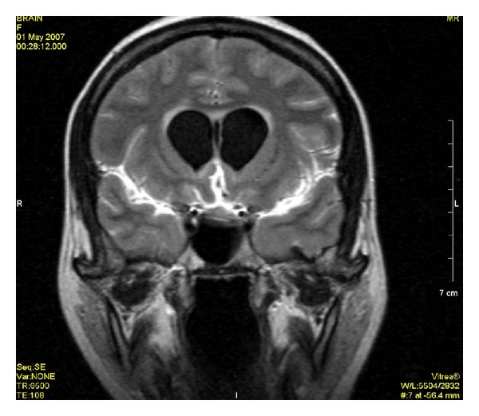

Ficha del catálogo
Meningitis aguda y sus complicaciones
- Sistema
- Nervioso
- Modalidad
- RM
- Región
- Espacio leptomeníngeo y cisternas de la base
- Dificultad
- Intermedio
La meningitis aguda es la inflamación de las leptomeninges, habitualmente de origen infeccioso, cuyo diagnóstico es clínico y por análisis del líquido cefalorraquídeo. El papel de la imagen consiste en descartar contraindicaciones para la punción lumbar, identificar un foco de origen y detectar complicaciones intracraneales.
Técnica
Resonancia magnética con FLAIR antes y después del contraste, difusión, T1 con contraste y secuencias vasculares cuando se sospecha vasculitis. La tomografía urgente valora hidrocefalia, efecto de masa y foco otomastoideo o sinusal.
Qué observar
- Realce leptomeníngeo que sigue los surcos y las cisternas de la base
- Hiperintensidad del líquido cefalorraquídeo en FLAIR poscontraste
- Dilatación ventricular por alteración de la reabsorción o por bloqueo
- Colecciones extraaxiales con realce de la membrana
- Focos de restricción a la difusión en surcos o en ventrículos
- Infartos por vasculitis de los vasos que atraviesan las cisternas
Hallazgos
El estudio puede ser normal en la meningitis no complicada. Cuando existen hallazgos se observa realce fino y lineal de las leptomeninges siguiendo la superficie cortical y las cisternas, con hiperintensidad del contenido de los surcos en FLAIR. Las complicaciones incluyen hidrocefalia, ventriculitis con material que restringe en las astas occipitales y realce ependimario, empiema o higroma subdural, cerebritis e infartos de distribución perforante por afectación vascular.
Perlas
Un estudio de imagen normal no descarta la meningitis, de modo que la indicación de tomografía antes de la punción lumbar depende de datos clínicos de riesgo y no de la necesidad de confirmar el diagnóstico. En cambio, el deterioro clínico durante el tratamiento obliga a repetir la imagen para buscar una complicación tratable.
Diagnóstico diferencial
- Carcinomatosis leptomeníngea
- Realce nodular grumoso en cisternas y pares craneales, en paciente oncológico y con evolución subaguda.
- Hemorragia subaracnoidea
- Contenido hiperdenso en los surcos en tomografía y productos hemáticos en secuencias de susceptibilidad.
- Meningitis crónica granulomatosa
- Realce espeso de las cisternas de la base con infartos perforantes e hidrocefalia de instauración lenta.
- Reacción meníngea posquirúrgica o tras punción
- Realce paquimeníngeo difuso más que leptomeníngeo, con antecedente reciente y sin datos clínicos infecciosos.
Simuladores
- Realce vascular lento de vasos piales normales
- Artefacto de FLAIR por flujo de líquido cefalorraquídeo o por oxígeno suplementario
- Realce dural fisiológico fino en pacientes con derivación de líquido cefalorraquídeo
Por modalidad
- TC
- Sirve para descartar efecto de masa e hidrocefalia antes de la punción lumbar y para buscar el foco en senos y mastoides.
- RM
- Es más sensible para el realce leptomeníngeo, la ventriculitis, el empiema y los infartos secundarios.
Protocolo
Estudio con FLAIR precontraste y poscontraste, difusión, T1 volumétrico con contraste y valoración de senos paranasales y oído medio; ante sospecha de complicación vascular se añade angiografía por resonancia.
Clasificación
Errores frecuentes
- Descartar meningitis por una imagen normal
- No revisar las astas occipitales en difusión y pasar por alto una ventriculitis
- Olvidar la búsqueda del foco otomastoideo o sinusal como puerta de entrada

meningitis realce leptomeníngeo ventriculitis empiema subdural hidrocefalia infección del sistema nervioso